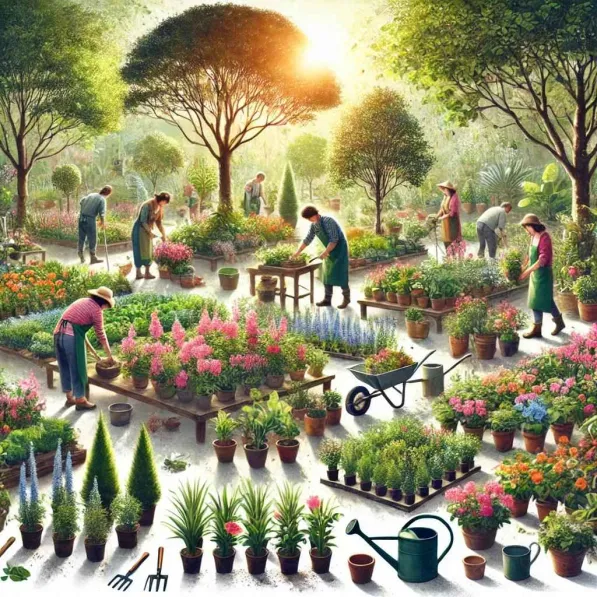
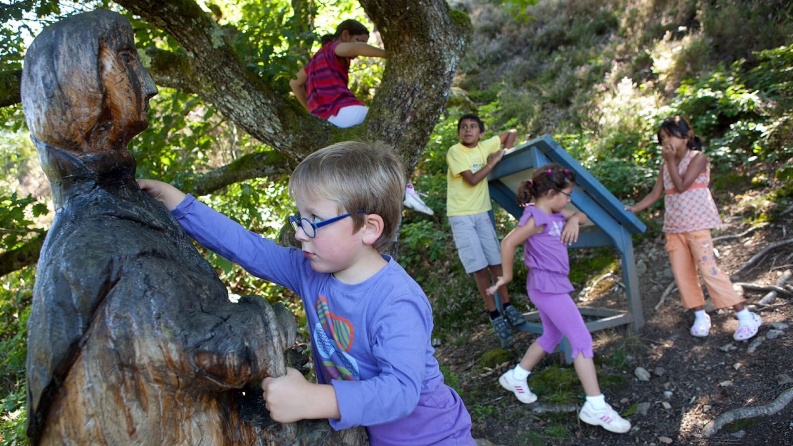
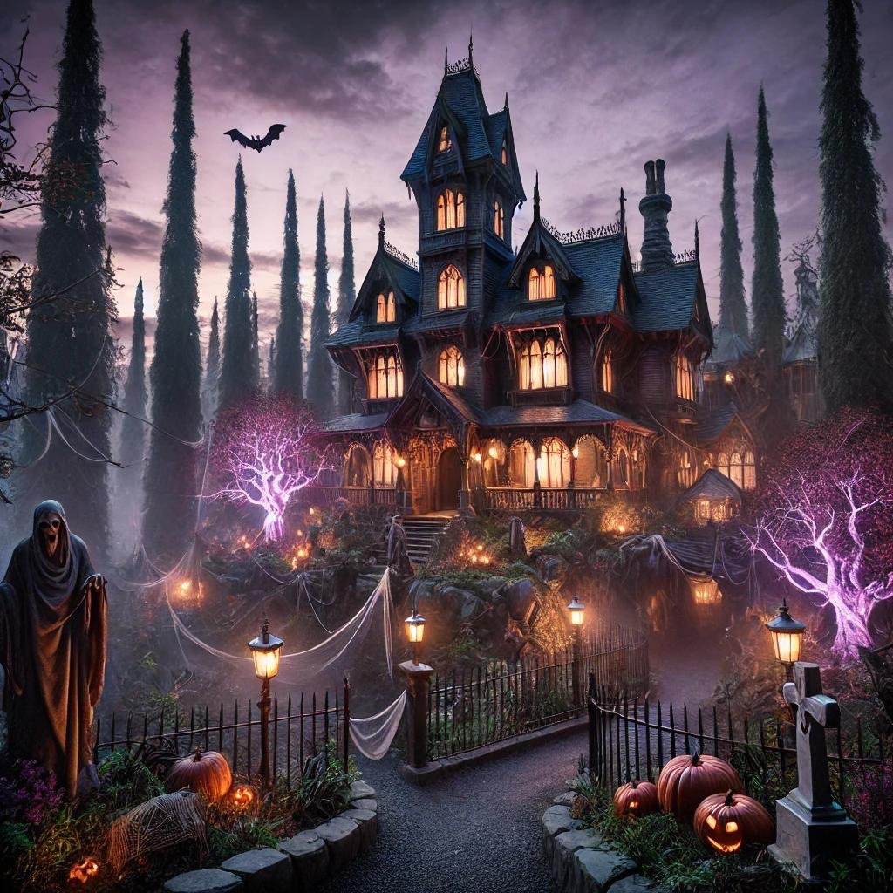
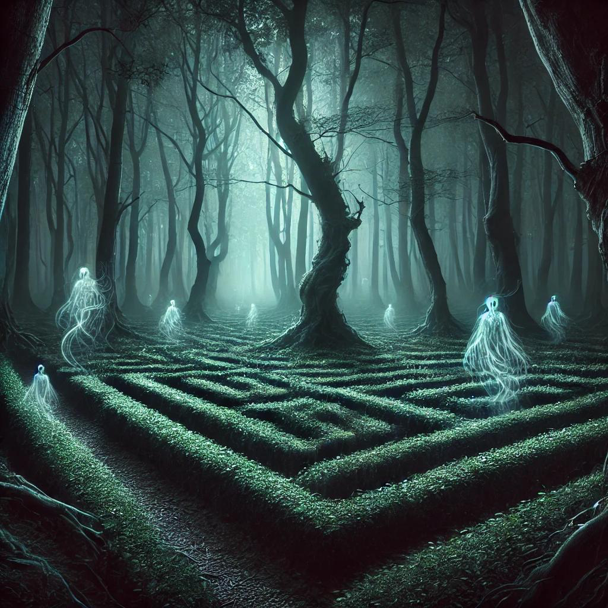

Parc d'Attractions • Orléans
Dans ce parc d'attractions, chaque visiteur peut trouver une expérience qui lui correspond. Ceux en quête d'aventure plongeront dans des activités palpitantes, tandis que les amateurs de tranquillité profiteront d'espaces dédiés au calme et à la beauté naturelle.
Les amateurs de découvertes seront enchantés par des activités ludiques et enrichissantes. Une journée ici, c'est la garantie d'un équilibre parfait entre action, repos et plaisirs.
Venez avec vos proches profiter des magnifiques paysages que la forêt offre. Livres partout, coins pique-nique, restaurants et animaux fantastiques — licornes, marsupilamis, panthères roses — vous attendent au milieu de jolis jardins.

Une immersion unique dans l'univers des plantes et de la biodiversité. Découvrez le cycle de vie des végétaux, apprenez les secrets de la nature et participez à des ateliers pratiques dans cet espace ludique et éducatif.
Suspendus entre les arbres, défiez vos limites à travers un parcours acrobatique où chaque étape est une nouvelle aventure. Testez agilité et audace dans un cadre verdoyant et dépaysant. Sensations fortes garanties en environnement sécurisé.

Un parcours immersif au cœur de la nature. Équipés de cartes et d'indices, partez à l'aventure pour résoudre des énigmes, découvrir des trésors cachés et apprendre les légendes de la région. Jeu, exploration et nature mêlés.
Une montagne russe mythique qui combine sensations extrêmes et immersion totale dans un univers terrifiant. Conçue pour les amateurs d'adrénaline, elle vous propulse dans une autre dimension où chaque hurlement se perd dans un néant oppressant.

Quelque part dans la forêt se cache cette attraction qui vous donnera la chair de poule. On raconte que la famille Briden la hante les soirs et déteste les visiteurs. On compte sur vous pour les faire fuir avant qu'il ne soit trop tard !

Plongez dans un mystère terrifiant où chaque pas vous rapproche de l'inconnu. Entrez dans un univers sombre entouré d'arbres sinueux et d'épais brouillard, où des esprits lumineux errent entre les haies de ce labyrinthe envoûtant.